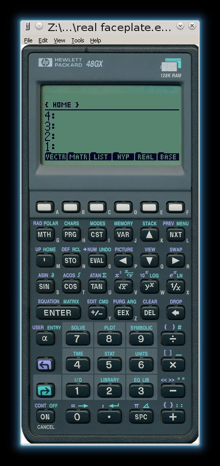

Miscellanous
Contents
Miscellanous¶
General links of interest¶
Electronics¶
Resource for design of Power Electronics Circuits¶
Link to Linear Technology’s App Notes¶
Links to Free Open Source Software for Linux and Windows¶
The Fastest Fourier Transform in the West (FFTW)¶
FFTW is a collection of C and Fortran Libraries to perform Fourier Transforms
HP48GX and HP48SX Emulators¶
Emu48 Emulator Version 1.57
Good looking skins for Emu48 Emulator
ROM version R (latest) for the Emu48 Emulator
Windows
Unpack everything into directory of your choice.
In windows, start cmd.exe and type:
convert gxrom-r ROM.48G
You should get a operation completed successfully message.
Start EMU48.EXE and navigate the menus to choose a suitable KML script (skin) for the calculator.
Linux
For Linux users, perform step one as stated.
Start WINE Explorer and navigate to cmd.exe in the directory /windows/command.
start cmd.exe and type:
convert gxrom-r ROM.48G
You can start the emulator by typing wine emu48.exe at a Linux command prompt or create a shortcut.
To create a pleasing icon image, convert one of the high res images in the Emu48 directory from .bmp to .png, which Linux uses.
Set this .png file as the icon.
Add the newly created shortcut to your taskbar if desired, for quick access to your favorite calculator! 
Links to MIT OpenCourseWare¶
MIT 6.858 Computer Systems Security, Fall 2014
MIT 6.00SC Introduction to Computer Science and Programming
Links to Electronics Simulation and PCB Design Software¶
Links to Electrical and Mechanical CAD/CAM Software¶
LibreCAD is open source equivalant to AutoCAD
FreeCAD enables creation of 3D models
Links to Text Editors Suitable for Programming¶
Links to Programming and Development Environments¶
Link to Code::Blocks IDE
Link to NetBeans IDE
Link to Eclipse Luna IDE
Link to Arduino IDE